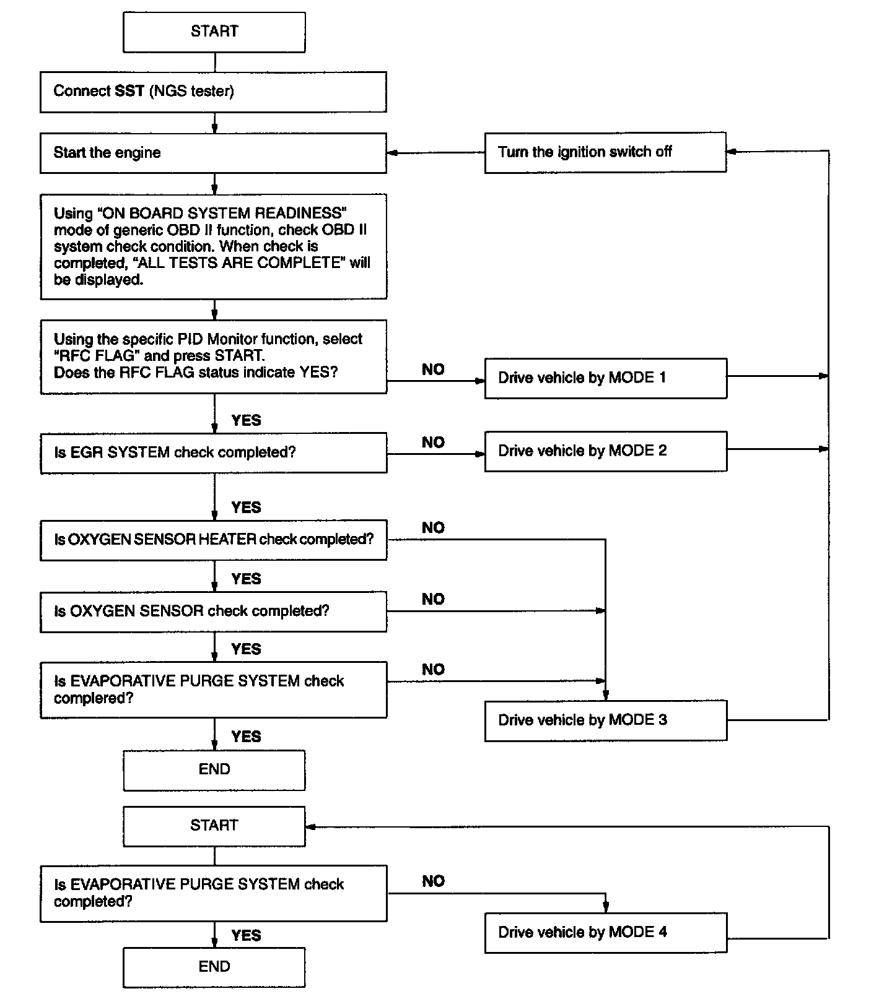
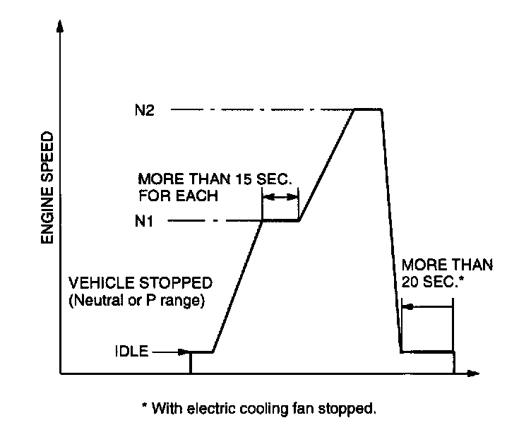
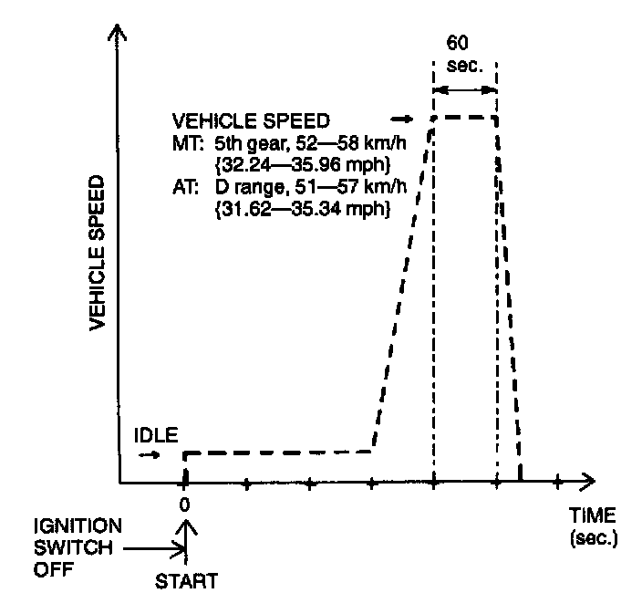
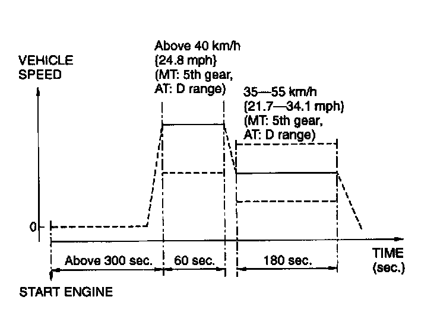
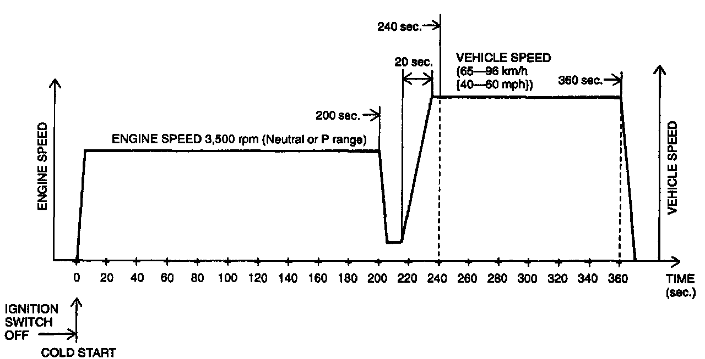

Monitors, Trips, Drive Cycles and Readiness Codes
NOTE:- Disconnecting the battery will reset the memory. Do not disconnect the battery during and after this procedure.
- Vehicle speed and engine speed detected by the PCM may differ from that indicated by the speedometer and the tachometer. Check the vehicle speed and engine speed during driving mode by using the NGS tester.
- If the OBD II system check is not completed while the drive mode procedure is carried out, the following cause is guessed.
1. The OBD II system detects the malfunction.
2. The drive mode procedure is not completed correctly.

MODE 1
1. Start the engine and warm it up completely.
2. Verify that all electrical loads (headlight, blower motor and rear window defroster) and A/C loads are off.
3. Verify that the initial ignition timing and the initial idle speed are within the specification.
4. If not as specified, adjust the ignition timing and idle speed.
5. Verify that terminals TEN and GND of the data link connector are not connected.
6. Carry out no-load racing at the specified speed for each model. Race the engine for more than 15 seconds at each time. Refer to the following engine speed table for engine speed.
Engine speed table
N1(rpm): 1800-2200
N2(rpm): 3000-3400

7. Idle the engine for more than 20 seconds with the electric cooling fan stopped.
MODE 2
1. Start the engine and warm it up completely.
2. Verify that all electrical loads (headlight, blower motor and rear window defroster) and A/C load are off.
NOTE:
- Driving mode before the constant speed driving is not specified.

3. Drive the vehicle at the constant speed of MT: 52-58 kph (32.24-35.96 mph), AT: 51-57 kph (31.62-35.34 mph) for 60 seconds. (MT: 5th gear, AT: D range)
MODE 3
1. Start the engine and warm it up completely.
2. Verify that all electrical loads (headlight, blower motor and rear window defroster) and A/C load are off.
3. Drive the vehicle at the constant speed of above 40 kph (24.8 mph) for 60 seconds after the above 300 seconds from engine start. (MT: 5th gear, AT: D range)

4. Drive the vehicle at the constant speed 35-55 kph (21.7-34.1 mph) for 180 seconds. (MT: 5th gear, AT: D range)
NOTE:
- Driving mode before the constant speed driving is not specified.
MODE 4
1. Verify that all following conditions are satisfied.
- Engine coolant temperature is 0-30°C (32-86°F).
- Intake air temperature is 10-60°C (50-140°F).
- Barometric pressure is 72.0 kPa (540 mmHg, 21.3 inHg) or higher.
- Fuel gauge needle points within 15-85%.

2. Start the engine and race it at 3,500 rpm for 200 seconds to warm it up completely.
3. Within 240 seconds after engine start, start the vehicle and accelerate to 85-96 kph (40-80 mph) in approximately 20 seconds.
4. Drive the vehicle at the constant speed of 65-96 kph (40-60 mph) till 360 seconds after engine start.